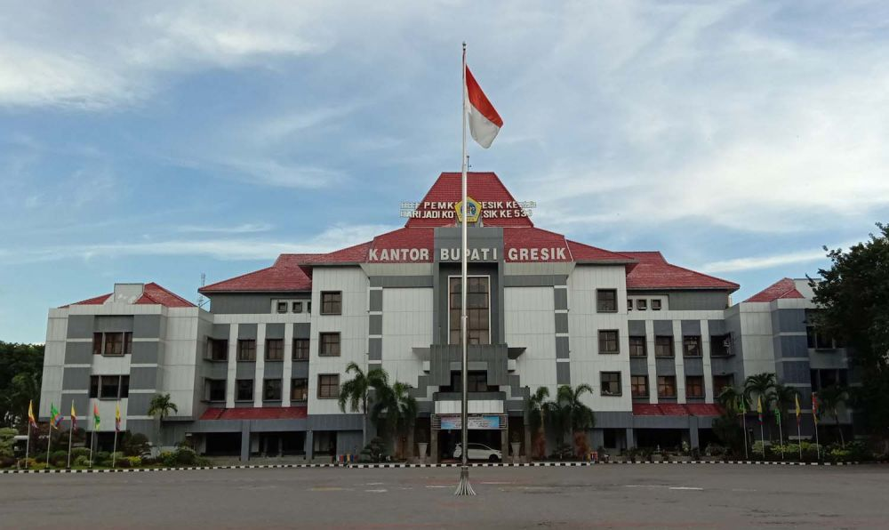
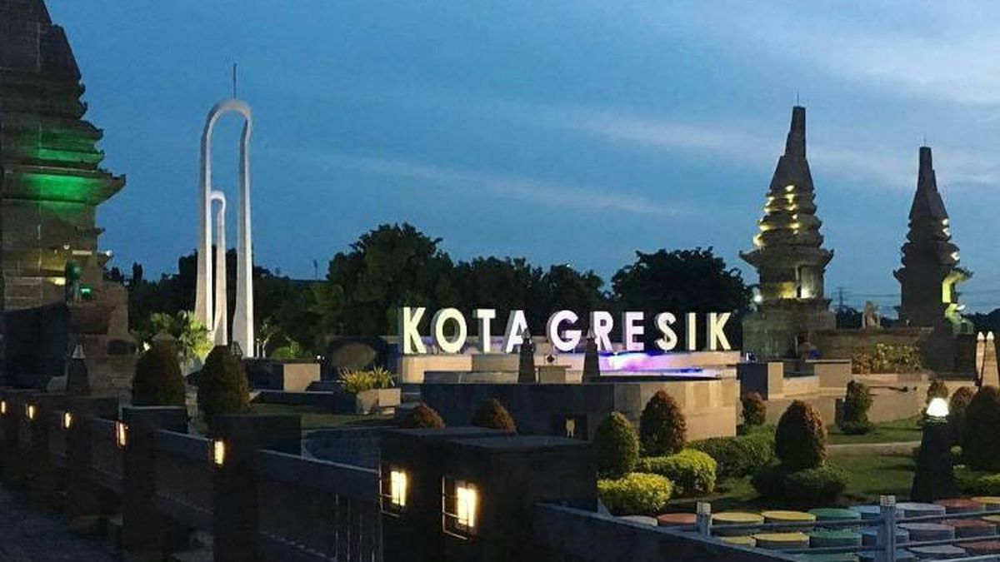
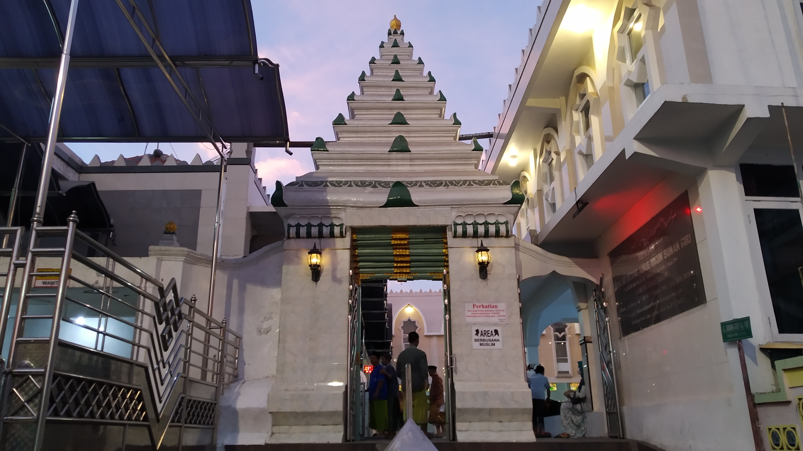
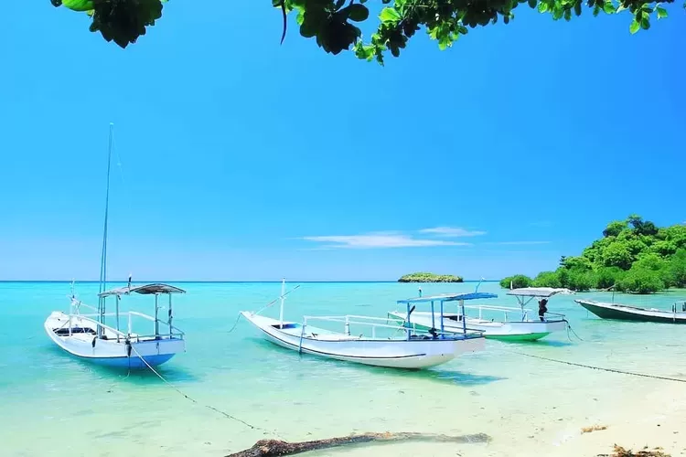

Sejarah

Terletak di jantung kawasan industri Jawa Timur, Kabupaten Gresik membentang di antara Laut Jawa hingga berbatasan langsung dengan kota metropolis Surabaya dan Selat Madura. Wilayah yang juga dikelilingi oleh Lamongan, Sidoarjo, dan Mojokerto ini tidak hanya dikenal karena lokasinya yang strategis, tetapi juga karena sejarah industrinya yang kuat. Gresik menjadi tonggak awal modernisasi industri nasional dengan berdirinya Semen Gresik, pelopor pabrik semen pertama yang kini tumbuh menjadi perusahaan semen terbesar di tanah air.
Di balik wajah industrinya, Gresik menyimpan pesona sebagai "Kota Santri" yang kental dengan jejak religi Wali Songo dan sejarah multikultural di Bandar Grissee. Daya tarik ini kian lengkap dengan kekhasan kuliner seperti Nasi Krawu dan Otak-otak Bandeng, serta eksotisme Pulau Bawean. Perpaduan warisan spiritual, budaya pelabuhan lama, dan tradisi lokal inilah yang memberikan warna unik bagi identitas Gresik saat ini.
Geografis

Terhampar di pesisir utara Jawa Timur, Gresik memiliki topografi yang menarik karena wilayahnya terbelah menjadi dua karakteristik berbeda. Bagian daratannya merupakan dataran rendah landai yang dikepung oleh aliran Kali Lamong dan Bengawan Solo, berbatasan langsung dengan hiruk-pikuk Surabaya di timur dan Lamongan di barat.
Namun, keunikan geografis Gresik yang sebenarnya terletak di seberang lautan. Sekitar 80 mil laut ke arah utara, terdapat Pulau Bawean—sering disebut sebagai "Putri Tidur"—yang juga masuk dalam administrasi kabupaten ini. Keberadaan Bawean memberikan Gresik bentang alam yang kontras: dari kawasan industri pesisir yang panas dan sibuk, hingga kepulauan tropis yang tenang dengan bukit-bukit hijau dan pantai berpasir putih.
Wisata
Berbicara soal pariwisata, Gresik menawarkan perjalanan lintas waktu dan dimensi. Anda bisa merasakan kekhusyukan spiritual di bukit-bukit para Wali, bernostalgia di lorong waktu arsitektur kolonial, hingga melarikan diri ke surga tropis tersembunyi di tengah Laut Jawa.
Makam Sunan Giri

Bertengger gagah di puncak bukit Desa Giri, kompleks ini lebih dari sekadar pemakaman; ini adalah bekas pusat pemerintahan "Giri Kedaton" yang pernah disegani di Nusantara. Pengunjung harus menapaki ratusan anak tangga untuk mencapainya, sebuah simbol perjuangan spiritual. Di puncaknya, Anda tidak hanya menemukan ketenangan batin saat berdoa, tetapi juga disuguhi lanskap kota Gresik dari ketinggian yang memukau, terutama saat matahari terbenam.
Kampung Kemasan

Sering disebut sebagai "Kota Tua"-nya Gresik, Kampung Kemasan adalah saksi bisu kejayaan para pengrajin kulit dan saudagar pribumi masa lampau. Deretan rumah dengan arsitektur campuran Eropa dan Cina (Indische) yang didominasi warna merah bata berdiri kokoh di sini. Berjalan di gang-gangnya seolah membawa Anda masuk ke lorong waktu abad ke-19, menjadikannya spot favorit bagi pecinta fotografi dan sejarah yang ingin lari sejenak dari modernitas.
Pantai Mayangkara (Bawean)

Tersembunyi di Pulau Bawean, Pantai Mayangkara adalah definisi sesungguhnya dari "hidden gem". Pasir putihnya yang halus bertemu dengan air laut sebening kristal dengan gradasi warna toska yang memanjakan mata. Jauh dari keramaian kota, pantai ini menawarkan ketenangan yang absolut. Uniknya, di sekitar kawasan ini Anda juga berkesempatan melihat Rusa Bawean, satwa endemik langka yang hanya ada di pulau ini.